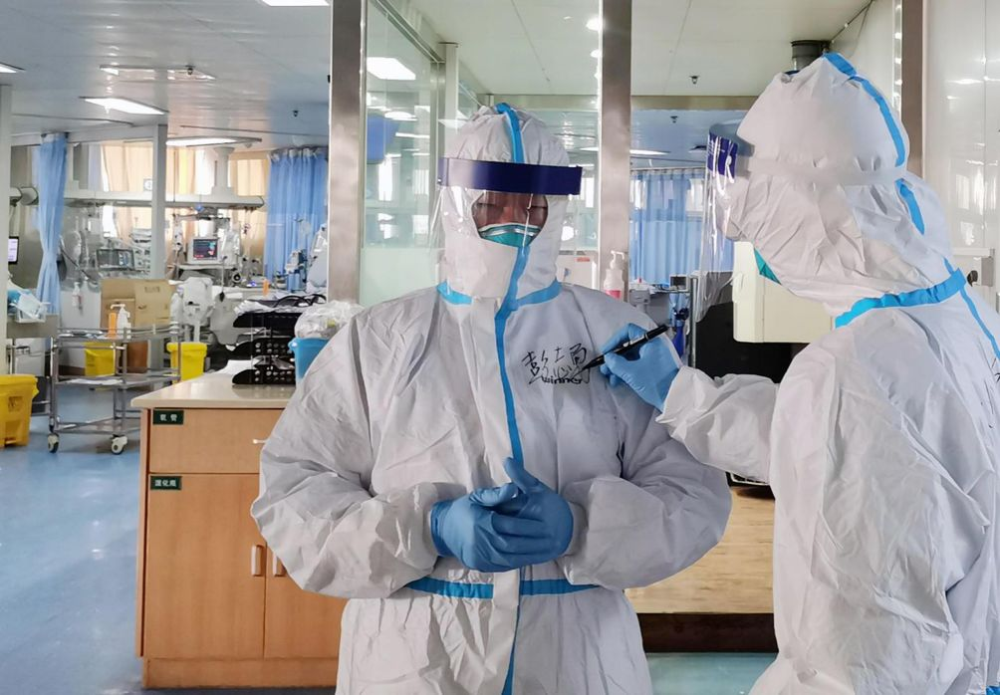

上千名被感染的武汉医护，如何扛过最艰难的一个月
原文链接 备份链接 对病毒的未知、医疗物资缺乏，又因高强度的工作压力影响到免疫力，导致医护感染达到高峰。随着医护人员防护意识、对病毒认识的增强，相关防护措施到位，后期被感染的医护人员应该越来越少 ****文 | 《财经》 …


*************▲*************2月5日，武汉大学中南医院重症医学科主任彭志勇（左）走进隔离病房准备救治患者，一名医生在他的隔离服上写下名字。 （ 新华社/图）
全文共2830字，阅读大约需要7分钟。
很多医护人员被感染恰恰发生在疫情初期，且相当一部分是被无症状传播者感染。南方周末记者统计发现，眼科、神经外科、肝胆胰外科、妇科、肝病科等非重点防控的普通科室，均有人员感染。
“前一天，他还是你的同事战友，转眼就成了你的病人，甚至天人两隔。”
“只要按要求做，不太可能有人感染。我带他们来，也要一个不少带他们回去。”广州医科大学附属第一医院副院长张挪富说，随着医护人员防护意识的提高，防护措施到位，后期被感染的医护人员应该越来越少。
本文首发于南方周末 未经授权 不得转载
文 | 南方周末记者 马肃平
责任编辑 | 曹海东
抢救室里躺着4位新冠肺炎患者，见患者病情还算稳定，一位同事建议所有医护人员再去做一次CT。这一天，是2020年1月26日。两天前，武汉市中心医院急诊科护士林婷刚做过一次CT，一切正常。为安全起见，她还是跟着同事一起排队缴费去了。
来回憋气吐气照了三次CT，还没等林婷从CT床上坐起，CT室的同事就冲出操作间，“你的片子有问题，估计是感染了，赶紧跟院里上报！”
所有人一下子围到林婷身边，调出CT影像，一张张地翻。切面上，一团白色的影像映入大家眼帘，紧接着又有一张，一共翻出5张切面异常。
这一天，林婷从一名护士变成了病人。
2月14日，国家卫生健康委副主任曾益新在国新办举行的疫情防控最新进展及关爱医务人员举措发布会上，首次披露了医务人员感染新冠肺炎的数据：截至2月11日24时，全国共报告1716名医务人员被感染，其中湖北全省占了近九成，共1502例，武汉一线有1102名医务人员确诊感染。
1716名医务人员中，6人不幸殉职，其中就包括武汉市中心医院眼科医生李文亮，湖北省中西医结合医院耳鼻喉科医生梁武东，华中科技大学附属同济医院器官移植科林正斌。
早在2月初，一张带有中国疾病预防控制中心（CDC）标志的图片就显示，武汉市医务人员中确诊和疑似病例数已接近千人，该统计只包括了确诊医护人员在15例以上的医院，武汉协和医院、武汉大学人民医院成为重灾区。当时，武汉大学人民医院的多位医生向南方周末记者证实了该院数字的真实性。
1
直至今日，林婷还是搞不明白，自己怎么就感染上了病毒。
她回想起1月初，急诊科病房收治了5位来自华南海鲜批发市场的患者，发烧不断，CT显示清一色的“白肺”。管床医生给急诊科主任和护士长打了电话，第二天凌晨2点，护士长带着林婷和几个值夜班的女同事，把之前的更衣室、柜子、高低床、废弃的一排排板凳全部拖了出来，再搬进病床、氧气罐，迅速把这几个病人转出来。随后，几位同事将之前的病区全部消毒。
现在想来，林婷仍觉后背发凉。当时的防护措施几乎为零，她戴着两层外科口罩，穿着一件蓝色的隔离衣，和几位被感染的患者共处一室，待了整整一晚。
居家隔离十多天，林婷的病情时好时坏，终于在2月11日接到护士长电话，“有床位了，赶紧准备住院”。路过住院部过道，她碰到科室的一位同事，寒暄几句后，对方突然崩溃大哭，告诉她好累好怕，医院已有超过百位同事陆续确诊或疑似感染。
武汉市中心医院（后湖院区）是离华南海鲜批发市场最近的一家医院，开放超过五百张床位，在最早一批定点医院中，开设的床位数仅次于金银潭医院，也是为此次疫情付出最多、受伤最深的医院之一，除了去世的眼科医生李文亮，多位医生和科主任被插管抢救。
“前一天，他还是你的同事战友，转眼就成了你的病人，甚至天人两隔。”从1月中下旬至今，武汉市中心医院护士石楠已经上了整整一个月的班，超负荷的工作加上心理煎熬，让她不知还能坚持多久。
在官方尚未确认病毒“人传人”特性时，新冠肺炎并没有引起医护人员足够的警惕。武汉大学中南医院重症医学科主任彭志勇告诉南方周末记者，很多医护人员被感染恰恰发生在疫情初期，且相当一部分是被无症状传播者感染。南方周末记者统计发现，眼科、神经外科、肝胆胰外科、妇科、肝病科等非重点防控的普通科室，均有人员感染。
1月中旬，武汉大学人民医院一名医生参与了一台肺癌手术。没过几天，他接到医院通知：手术病人已被确诊为新冠肺炎，手术中的“一助”也被确诊感染。该医生告诉南方周末记者，自己也被要求在家接受隔离观察，好在最终无恙。
在彭志勇研究的武汉大学中南医院138名确诊患者中，从1月1日到1月28日，有40名医务工作者被感染，“相对于全院三千多员工，这已经是很小的比例。”彭志勇说，感染最多的不是ICU、感染科或急诊科等科室，而是普通科室的医务人员共31人。一名患者因腹部症状住进了肝胆胰外科，后被确诊了新冠肺炎，该患者感染了和他相关的十余名医护人员，其中一名医生又将病毒传染给了家人。
2
冲在最前线的医护人员被感染或被隔离而无法上班，剩下的医护人员，不管来自哪个科室，经过紧急培训后转岗，像“炮弹”一样顶上，这已成为特殊时期的常态。
“就算是在呼吸科、感染科或ICU，平时也没那么多机会上三级防护，更别说其他科室了。”暨南大学附属第一医院感染控制办公室主任陈祖辉说。三级防护适用于为病人实施吸痰、气管切开、气管插管和其他可引发气溶胶操作的医护人员。
1月24日晚，陈祖辉和首批128名广东省援助湖北医疗队队员出征武汉，他们立下规矩：防护措施不过关不进病房，防护物资不到位不上“战场”。
全力筹备防护物资，成为保护医护人员的头等大事，驰援医院都自觉带物资前来。“前期自己带一部分，广州后方陆续补给，还有就是社会捐赠。”广东医疗队援助的汉口医院，是武汉最早收治新冠肺炎的定点医院之一。陈祖辉所在的呼吸内科二病区，每天靠调拨获得的N95口罩只有10个，而每日实际使用量超过120个。
2月10日，武汉市中心医院护士梅澜戴着一层普通白色口罩和一次性医用口罩，给病人采集咽拭子样本。病人一个张嘴动作，就将产生大量携带病毒的气溶胶。面对这种风险，N95口罩、防护服、护目镜和面屏是标配。
“什么防护都缺，拿什么去战斗？”梅澜说。医用物资最紧缺的时候，一个N95口罩都没有，她穿着一抬手就破两个洞的防护服，用垃圾袋当脚套。2月14日，武汉市中心医院继续发布公告：因医院消耗量大，医院库存十分紧缺，恳请社会各界援助医用物资。
3
如何避免院内感染，一直是令各家医院挠头的难题。“现在防的就是院内交叉感染，作为院感（即院内感染控制）人的压力很大。”陈祖辉说。
汉口医院原本是一家二级综合性医院，和武汉市的很多医院一样，新冠肺炎疫情发生后，医院转移病人、腾空病房后，被改造成了专门收治发热病人的定点医院。
“刚来的时候压力很大，缓冲区连灯都没有，医护人员没法穿脱防护服。”陈祖辉回忆，被改造后的病区起初还存在着院内感染的隐患——虽临时隔出两个缓冲区，但墙壁是三夹板粘的，漏风，只能找师傅重新弄。医护人员脱下的防护服、N95口罩等高危医疗废物，起初也堆在缓冲区来不及清理。
在汉口医院，医生每6小时换班，护士4小时一班。每天，陈祖辉和另两名负责院感的同事督促队友穿好防护服，检查过关才放行进入病区；换班时，他们守在缓冲区，看着医护人员正确脱下防护服，指导队员处理个人卫生。
1月底第一次进入隔离病区时，有队员在缓冲区迟迟不动，“我害怕，想再等等其他人，搭个伴。”那几天，有患者没能抢救过来，90后护士从未经历过这样的场面，隔离病区仿佛一个未知的世界。陈祖辉理解她们的心情。
陈祖辉说，只要做好防护，医护人员被感染的风险其实很低。目前，128名队员无一人感染。
驻扎在武汉协和医院西院区的广州医疗队目前同样零感染，“只要按要求做，不太可能有人感染。我带他们来，也要一个不少带他们回去。”广州医科大学附属第一医院副院长张挪富说，随着医护人员防护意识的提高，防护措施到位，后期被感染的医护人员应该越来越少。
（为保护隐私，文中林婷、石楠、梅澜为化名）

征集

《南方周末》现向所有身处新冠肺炎一线的读者公开征集新闻线索。我们欢迎武汉及周边城市医患联系记者，提供防疫前线的一手资讯，讲述您的新春疫情见闻。若您不在武汉，但您身处之所也有与疫情相关的重要新闻线索，亦欢迎您与我们分享。疫情仍在蔓延，南方周末将执笔记录每位国人在疫情面前的希望与困境，与广大读者共同面对疫情。祝愿所有读者朋友们，新春平安。线索可直接给本篇文章留言，格式为：【线索】+内容+您的电话（绝对会对您的个人信息保密）
戳击下面图片 继续阅读专题


原文链接 备份链接 对病毒的未知、医疗物资缺乏，又因高强度的工作压力影响到免疫力，导致医护感染达到高峰。随着医护人员防护意识、对病毒认识的增强，相关防护措施到位，后期被感染的医护人员应该越来越少 ****文 | 《财经》 …
原文链接 备份链接 记者/兰子木 韩谦 李佳楠实习记者/周缦卿 龙天音**** 编辑/杨宝璐 宋建华 院感科在培训医生正确穿戴防护服 “院感科”，全名“医院感染管理科”。顾名思义，其主要工作就是对医院感染进行有效预防与控制。 在此次新冠 …
原文链接 备份链接 【财新网】（记者 高昱 萧辉）武汉一线已经有1102名医务人员确诊新冠感染，而湖北省全省的感染数1502例。这意味着在武汉和湖北，医务人员感染新冠占当地总感染人数的比例，至2月11日已经达到5.6%（武汉） …
原文链接 备份链接 医用物资频频告急，奋战在抗击新冠肺炎疫情一线的医务人员，他们在经历怎样的生活？ 他们中，有人被确诊感染后写下了遗书，有人在床边崩溃大哭，有人被家属奉劝不要去一线……当医护人员被感染变成患者时，他们会和普通武汉市民一样恐 …
原文链接 备份链接 经济观察网 记者 瞿依贤 湖北省第三人民医院呼吸内科医生胡晟在除夕这天拿到了自己的CT片子：双肺几乎全白。他科室的同事看到结果，好几个都哭了。 胡晟是在发热门诊被感染的。湖北省第三人民医院在1月8日开设发热门诊，他从呼 …